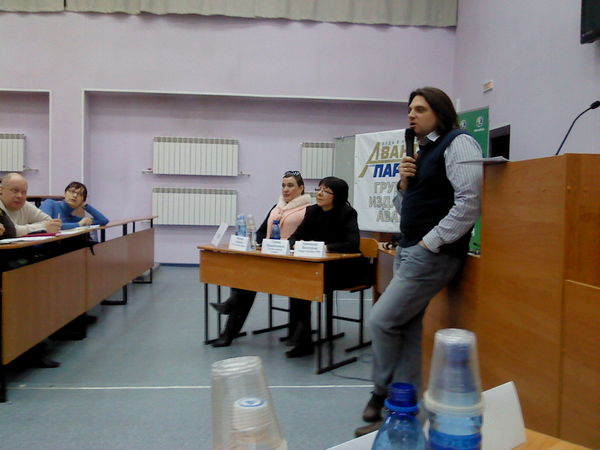

Сегодня в КемГУ во второй блочной аудитории прошёл диспут. Будущие, настоящие журналисты, разного рода кемеровские блогеры и сотрудники пресс-служб собрались чтобы определиться куда же СМИ будут двигаться дальше.
Организаторами диспута выступили непосредственно сам КемГУ, группа газет «Авант-Партнёр» и Медиаклуб, в лице Михайлиной Гульсары. Целей Медиаклуба я пока до конца не понял, но думаю с энергией и целеустремлённостью самой Гульсары всё у Медиаклуба должно получиться. В спонсорах был Промсвязьбанк (его стенд мне пришлось помогать собирать перед диспутом :) и благодаря ему, в частности, большинство присутствовавших получило в подарок футболку. Главный по пиару в кемеровском «Мегафоне» Остап Григорьянц в конце программы вручил самой активной студентке оставшийся в тайне подарок.
Еще на обсуждениях будущего диспута, которых было три, мы с группой организаторов в лице Марины Кларисс (представителя «Российской газеты»), Галины Красильниковой (редактора «Авант-Партнёра») и Александра Винокурова (директора «Кузбасс ФМ») выяснили, что противостояние будет в принципе натянуто. Никто не отрицал, что сегодня традиционные средства массовой информации уже не смогут без блогеров и микроблогеров, а в свою очередь пользователи интернета, в том числе генерирующие контент, волей-неволей пользуются информацией получаемых от традиционных СМИ (радио, телевидение, новостные порталы).
В роли «эксперта» я занял сторону блогеров. Задачей обсуждения (по крайней мере для меня) было посмотреть и послушать, что об этом думают те, кто профессию журналиста уже выбрал, но в профессии еще не состоялся. К концу обсуждения, которое заняло целую «пару» стало понятно, что ни посмотреть ни послушать студентов вероятно не получится.

Студенты то ли тоже пришли послушать, то ли не имели позиции, но в основном молчали. Микрофоны за редким исключением в виде премированной Остапом девушки прочно заняли уже состоявшиеся журналисты, которые похоже всерьез восприняли противостояние, которого не было. Мэтры пера и word'a говорили подолгу, грамотно, стилистически красиво, как добавил декан Артур Чепкасов — витиевато. Рассказывали о себе, сетовали на экономические вопросы.
К середине диспута я понял, что отделяет профессиональных журналистов от народа. Именно вот этот синдром большой информации и отделяет. Журналисты-профессионалы долго говорят, помногу пишут, наверняка так же много читают. Современной молодёжи, по моему скромному мнению, такой продукт становится уже не нужен. Вместо чтения статьи на 7 тысяч знаков студент прочитает 50 твитов. Это кстати не обязательно должны быть именно твиты. Я давно не студент, но у меня в ридере несколько сотен лент. Ридер — это такая программа, которая собирает новости с разных источников (это не твиттер). Я могу смело заявить, что я в курсе всех событий происходящих в мире. В каком бы я был курсе, читая профессионально подготовленные материалы я примерно представляю.
Кстати многим кемеровским журналистам пока даже непонятен твиттер как явление. Как высказались сразу несколько взрослых человек — молодёжь сидит в твиттере. Сидеть могут люди в «Одноклассниках» ну или на сайте Лента.ру. В твиттере не сидят. Твиттером думают.
Перекрикивать оппонентов из зала желания особого не было, спорить со взрослыми людьми тоже (я всё-таки на студентов пришёл посмотреть).
К концу дискуссии у меня даже родилась, невысказанная логическая концовка. Мол, пока журналисты говорили долго и красиво, сторонники нетрадиционных медиа (к которым все изначально причисляли студентов) давно всё написали, выложили и откомментировали. Но заканчивая этот пост я понимаю, что это не так. Студенты (их, кстати было не очень много) не сильно изменились с поры моего студенчества. По-прежнему нет желания выражать свою позицию никак, да и позиции очень часто нет. Есть только 5 лет, а потом работа продавцом-консультантом.
Спасибо организаторам за интересный опыт, всегда буду рад принять участие еще в чём-то.
p.s. Пока ехал в офис, позвонили с РГТЭУ, где я учился. Предложили рассказать студентам, как докатился до жизни такой. Может и за дипломом, который до сих пор не забрал, зайду заодно.
Также присутствовали